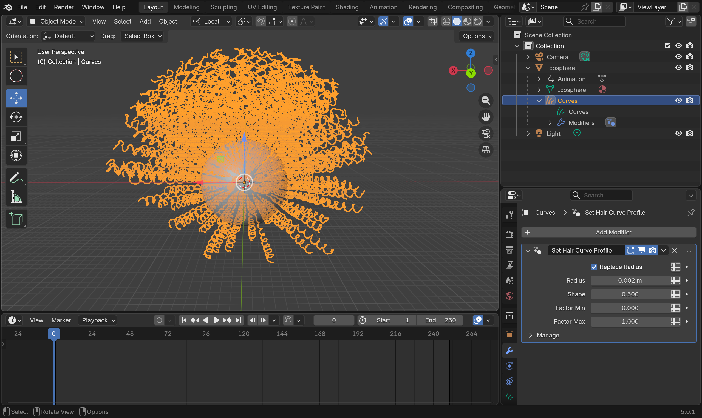
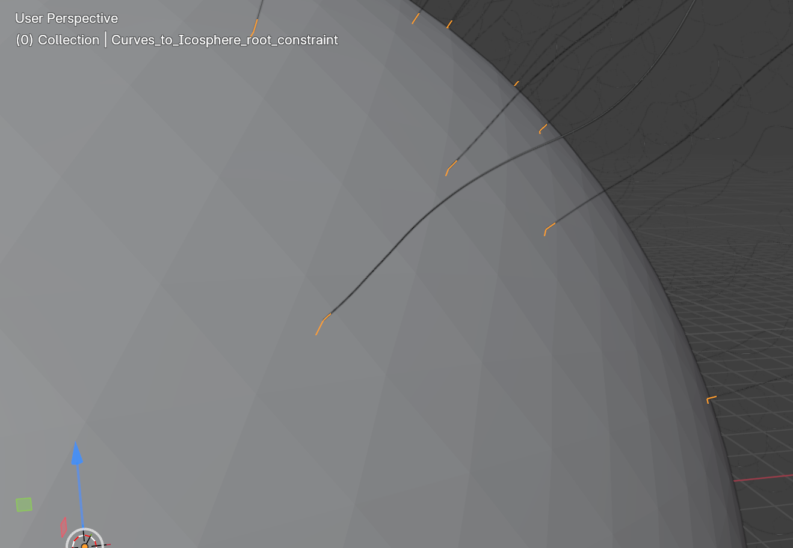
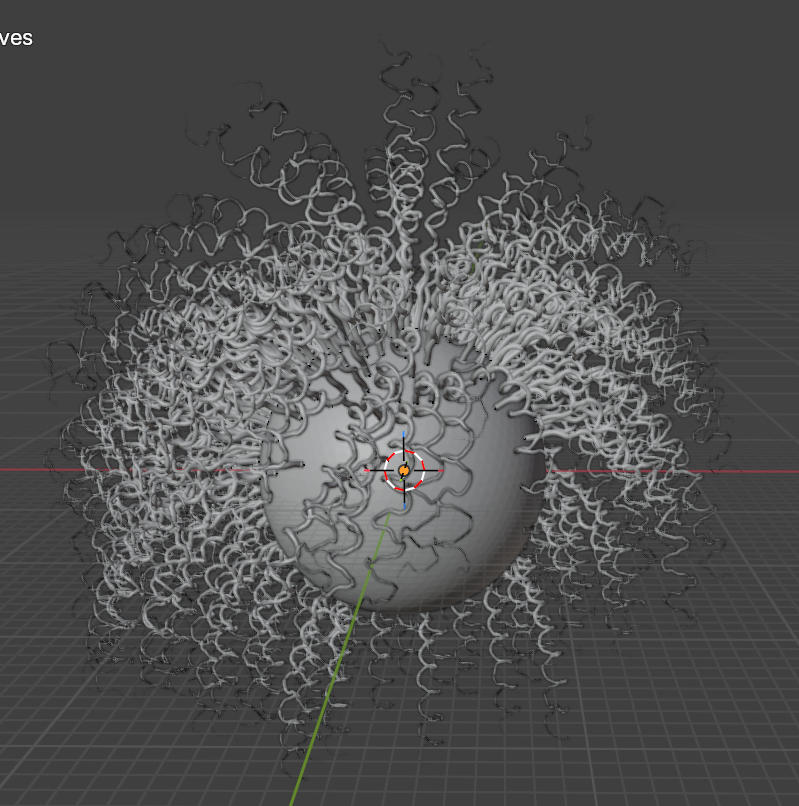
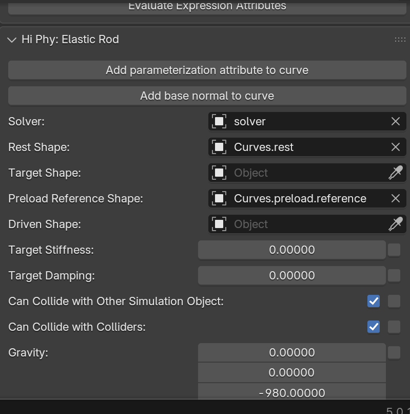

Hair#
To create the groom, you can follow the youtube video here.
We will start with the Blender file here. The file already contains the groom.
{kind=link}

Curves Object
For hair simulation, HiPhyEngine require the hair object to be "CURVES" object, The "CURVES" object will be treated as piecewise linear segment for simulation, so it will need to be relatively high resolution.
Step 1: Setup Solver#
-
Create an empty plane axis, rename it solver, goto the physics panel, turn on HiPhy, select Lagrangian Solver
-
Turn off perform curve curve continuous time collision. (It is not needed for most hair setups)
-
Change the Solver Scale to 1.
-
Change the Newton tolerance to 2.
-
Change the CG tolerance to 2. (Both tolerance can be lower if continuous time collision is turned off)
-
Change the End Frame to 100.
curve curve continuous time collision
HiPhyEngine allows continuous time collision for curves to prevent then goes through each other. However, continuous time collision is expensive and for most hair simulations, it is not important. However, even without continuous time collision, HiPhyEngine will still perform a spring based collision between the hair curves.
Step 2: Setup Hair#
-
Select Curves, Goto the physics panel, turn on HiPhy, select Elastic Rod
-
Set Gravity to (0, 0, -980)
-
Set Collision Radius to 0.2 cm
-
Set Bend Stiffness to 200
-
Set Twist Stiffness to 200
Bend and Twist Stiffness
Curly hairs usually are more stiff than straight hairs, we turn up the bend and twist stiffness to reflect that.
Step 3: Setup Constraint#
In HiPhyEngine curves is not a simple 1D object. Each segment has something called a frame, to prevent the curve segments from rotating from its axis. The constraints for the curves needs to also constraint the frames, in addition to the positions. But first, we need to create the frame.
-
Select Curves, right click->Hi Phy Add Base Normal. It will add a base normal attribute to the curves object. The default parameters will work just fine.
-
Select Curves and Icosphere, right click->attribute->HiPhy Constraints->HiPhy Create Root Constraint. It will create a constraint that bind the groom to the surface of the object.
Root Constraint Projection
When creating the root constraint, HiPhyEngine will use the first vertex of each curve and project onto the surface to bind it. For the best result, make sure the first vertex lies on the binding surface.
{kind=link}

Step 4: Add Collider#
- Select Icosphere, Goto the physics panel, turn on HiPhy, select Collider
That's it! You can run the simulation from the Solver object and see the hair moves.
{kind=link}

- Optional: User might noticed that the hair is moving a lot and won't settle easily. The default mass damping value is pretty low. User can change it to 1.0 on Curves and see its effect on the simulation result.
Step 5: Preloading#
Notice that the groomed hair has fallen under gravity. To help maintaining the groom, HiPhyEngine provide an inverse simulation solver to find the rest shape that will hold to groom under gravity. In this step, we will use the preloading process provided HiPhyEngine to find the rest shape.
-
Duplicate Curves, rename it to Curves.rest. Unparent Curves.rest from the duplicated sphere, delete the duplicated sphere, and the duplicated solver.
-
Duplicate Curves.rest, rename it to Curves.preload.reference
Disable HiPhy for the assisting shapes
Because rest shape and preloading reference shape are not simulation objects, please disable HiPhy on them so the solver won't try to simulate them.
- Select Curves, set rest shape to Curves.rest in the Hi Phy panel, and set preload reference shape to Curves.preload.reference.
HiPhyEngine need to know what is the shape it is trying to maintain under gravity. That's the Curves.preload.reference.
{kind=link}

- Select solver object, click Preload Curves button at the bottom of Hi Phy panel.
The preloading process will run and change the Curves.rest. You can check the process in the console.
Now if you run the simulation again, you can see the hair no longer falls under gravity. You can control how much external forces are preloaded by changing the Preload Percentage parameter. It is recommended to not to fully preload the curves, but rather use a ramp to preload from 0 to 1, from the root of the curves to the tip of the curves.
Step 5: (Optional) Setup for Rendering#
Similar to other objects, we will need a separate driven shape so we can apply the simulation result to.
-
Duplicate Curves.preload.reference, rename it to Curves.driven
-
Select Curves, set driven shape to Curves.driven in the Hi Phy panel.
Additional curves modules can be used on the driven shape.
-
Select Curves.driven, add Interpolate Hair Curves, Clump Hair Curves, Hair Curves Noise modules.
-
For Interpolate Hair Curves, choose the Icosphere as the Surface, set Viewport Amount to 0.1, Distance To Guide to 2, Distribution to Poison Disk, Density to 20.
-
For Clump Hair Curves, default value works just fine
-
For Hair Curves Noise, set Distance to 0.1, and check Preserve Length.
That's it! The default hair shader work just fine!
However, you will notice the small chattering during hair motion from Blender's interpolation algorithm.
To overcome this, HiPhy comes with a curve motion mapper that interpolate the motion from the simulated guides to the instanced curved.
Step 6: (Optional) Adding Curves Motion Mapper#
-
Apply Interpolate Hair Curves, Clump Hair Curves, and Hair Curves Noise modifiers of Curves.driven
-
Select Curves, remove Curves.driven from the Driven Shape
"Driven Shape"
The Curves Motion Mapper will be used to drive the Driven Shape.
-
Create an empty plain axis object, rename it to motion mapper
-
Select motion mapper, goto Hi Phy panel and select Curves Motion Mapper.
-
Select Curves as Guide Shape
-
Select Curves.drien as Driven Shape
-
Check Use Frame
-
Set Binding Radius to 3
-
Set Number of Guides to 1 (Clumped Curly hair only need to bind to the primary guide)
-
Check Live Update
-
If the binding failed and warns the missing of hi_phy_frame_normal, select Curves, right click->HiPhy Utils->Hi Phy Compute Frame Normal
"hi_phy_frame_normal"
hi_phy_frame_normal attributes will be automatically created once the hair simulation is ran and the simulation result is brought back. However, if the simulation has not ran yet, the attribute may not have been created.
The final Blender file can be find here. (The demo file used reduced curve count to reduce the file size)
The final render with motion mapper, shows that the chattering of the hairs are gone.